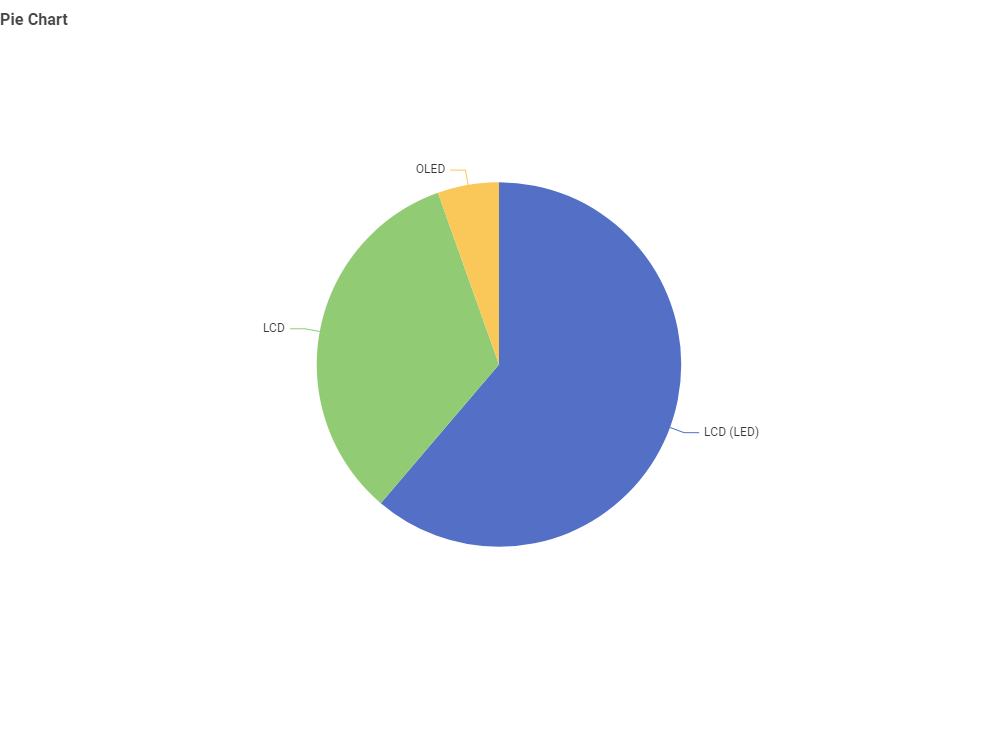
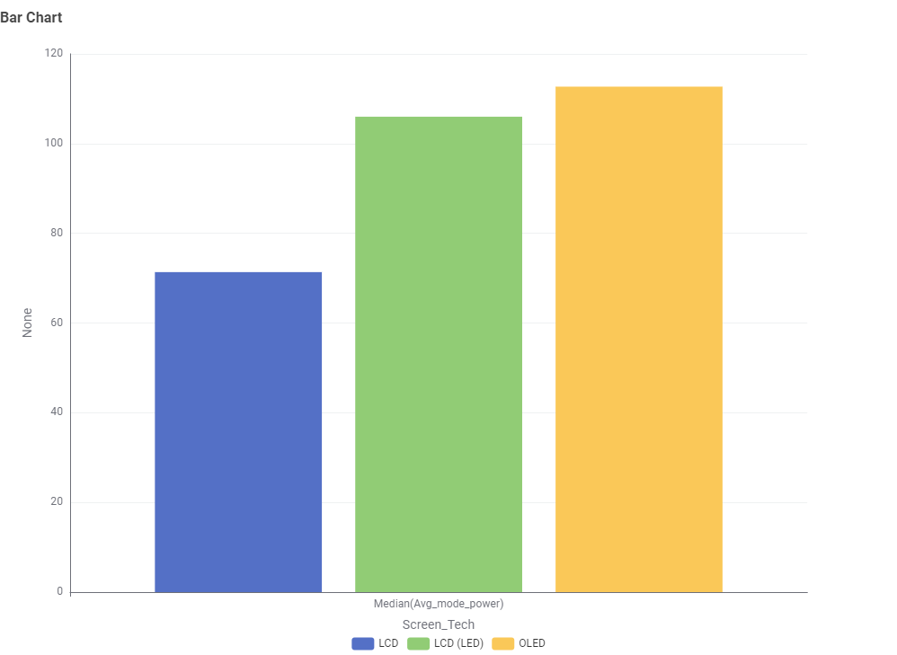
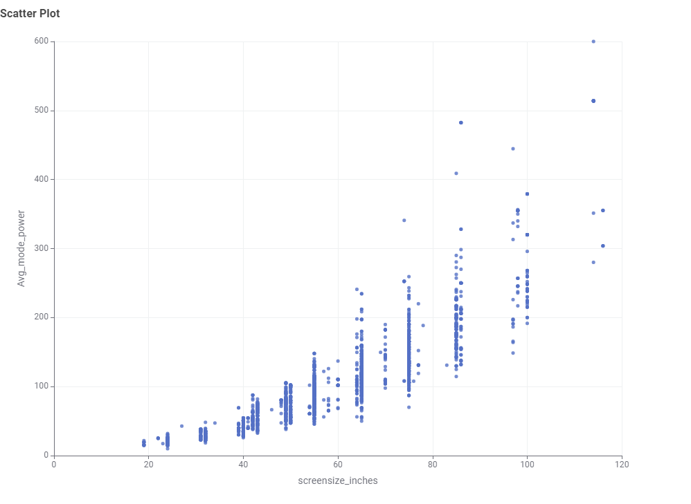
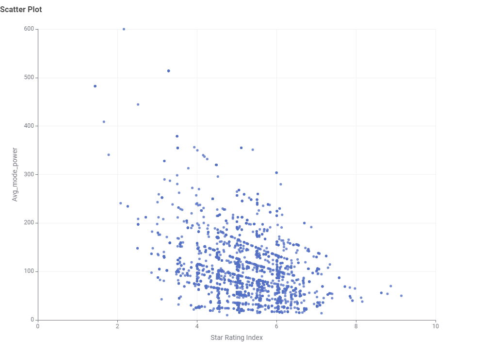

Televisions
Screen size and usage pattern are the two biggest factors in a television's yearly energy draw.
Data Analysis (KNIME)
The charts below were generated in KNIME after cleaning and processing the raw Australian TV energy dataset.
1. Type of TV screen technologies are currently available in Australia and the most frequent:


2. Available screen sizes and most frequent:

3. Brands have the largest number of models:

4. Type of screen technology consumes the least amount of powers:

5. The relationship between screen size and power use:

6. The relationship between star rating and screen size:

7. Differences in power consumption between brands:


8. The relationship between star rating and power use:
